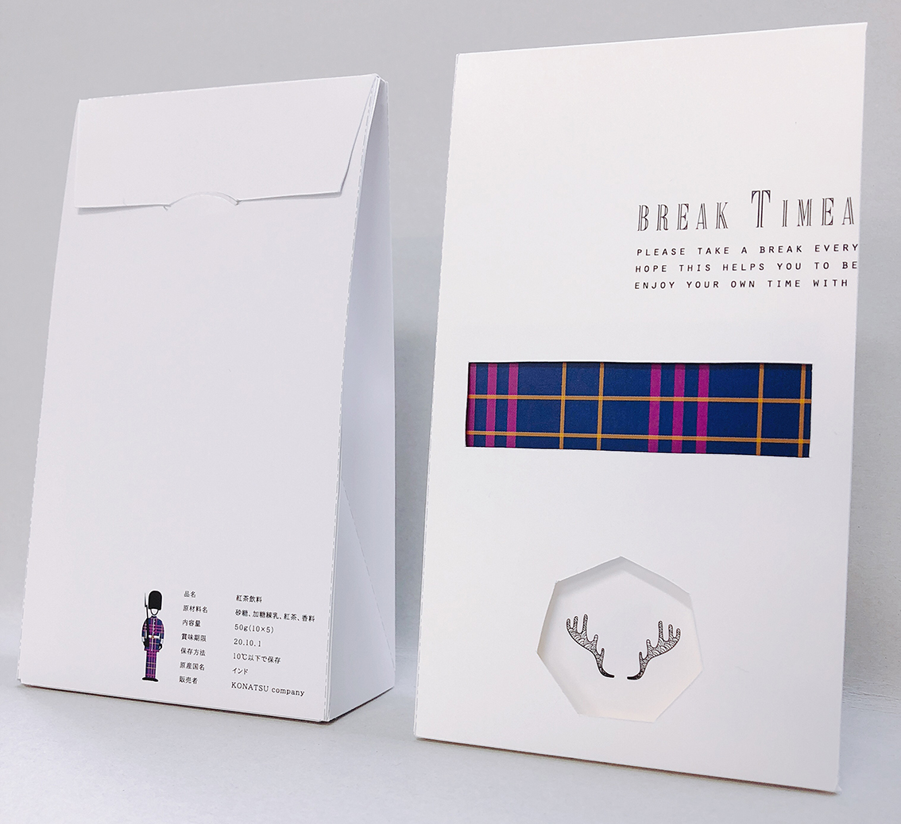

Konatsu Mae
ABOUT
使いやすさを重視した上でフォントやカラーにこだわったシンプルで繊細なデザインを目標にデザインを行っております。コーディングに関しましてはレスポンシブデザイン、必要に応じてJavaScript,jqueryを導入しました。
SKILL
言語スキル
HTML,CSS
WEBクリエイター能力認定試験（HTML5.0）スタンダード 修了
JavaScript , Jquery に関しましては必要に応じての実装のみの為、勉強中です。
使えるソフト
Adobe Photoshop
Adobe Illustrator
Adobe Dreamweaver
Adobe Brackets
WORK WEB
映画のホームページ
好きな映画のホームページを作成致しました。
トップページのナビ部分はホバーすると日本語で表示される仕組みになっています。
このように常にデザイン性、利便性を考慮して制作を行っております。
各ページ


カフェのホームページ

レスポンシブデザイン

学校のグループ制作で架空のカフェのホームページを製作致しました。
こちらのサイトは全ページレスポンシブ対応を目指し製作致しました。
私はコーダーを担当し、渡されたデザインを忠実に再現出来るよう勤めました。レスポンシブデザインのコーディングはもちろん、ディレクターさんと一緒にサイトの最終チェックなども行ないました。
各ページ


各ページのレスポンシブデザイン


WORK DTP
パッケージデザイン



紅茶のティーパックセットのパッケージデザインをしました。
箱の窓から中身が見えるようになっており、紅茶を飲むたびにデザインが変わるようになっております。箱をシンプルで洗練されたデザインにすることによって、より一層中身のデザインが際立つようにしました。